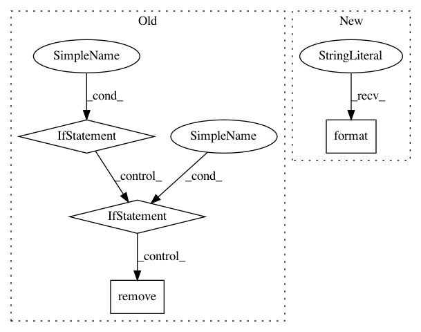

c5b11b7668df61c3a5c3f927625430c56413d5fb,lib/prody/utilities/pathtools.py,,openFile,#Any#,53
Before Change
:arg backup_ext: extension for backup file, default is :file:`.BAK`
:type backup_ext: str
if not isinstance(filename, str):
raise TypeError("filename must be a string")
folder = kwargs.pop("folder", None)
if folder:
filename = join(folder, filename)
ext = splitext(filename)[1]
backup = kwargs.pop("backup", pkg.SETTINGS.get("backup", False))
backup_ext = kwargs.pop("backup_ext",
pkg.SETTINGS.get("backup_ext", ".BAK"))
if args and args[0][0] in ("a", "w"):
if isfile(filename) and backup:
bak = filename + backup_ext
if isfile(bak):
os.remove(bak)
os.rename(filename, bak)
return OPEN.get(ext, open)(filename, *args, **kwargs)
def gunzip(filename, outname=None):
After Change
try:
exists = isfile(filename)
except Exception as err:
raise TypeError("filename must be a string ({0:s})".format(str(err)))
folder = kwargs.pop("folder", None)
if folder:
In pattern: SUPERPATTERN
Frequency: 3
Non-data size: 4
Instances
Project Name: prody/ProDy
Commit Name: c5b11b7668df61c3a5c3f927625430c56413d5fb
Time: 2012-11-14
Author: lordnapi@gmail.com
File Name: lib/prody/utilities/pathtools.py
Class Name:
Method Name: openFile
Project Name: NeuroTechX/moabb
Commit Name: 66b0061685aa10d124ef89c9a2f5ddeb7ce1ea1b
Time: 2018-01-24
Author: vjayaram@danube.is.localnet
File Name: moabb/datasets/download.py
Class Name:
Method Name: data_path
Project Name: biolab/orange3
Commit Name: 42d066415c1cd8235fd0f1b0495a1a3bdf24b018
Time: 2016-02-04
Author: janez.demsar@fri.uni-lj.si
File Name: Orange/widgets/data/owfile.py
Class Name: OWFile
Method Name: select_file